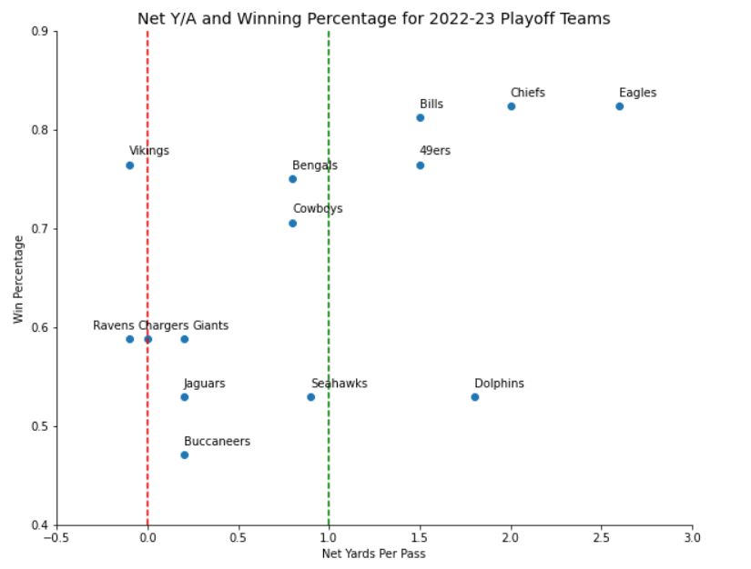

What is Net Yards Per Pass Attempt? One of the most predictive metrics for NFL team success is one that may not appear on many broadcasts or come up in casual conversations. It may not be as obvious as turnovers or as flashy as a great pass rush, but it can be quite powerful in separating a good team from a bad one. Net yards per pass attempt is simply found by taking a team's offensive yards per pass attempt and subtracting the defenses's yards per pass attempt allowed. For example, we can see from the table on the right that for the season, Tom Brady's Buccaneers offense averaged 6.3 yards per pass attempt, while the Bucs defense allowed just 6.1 yards per pass attempt to opposing quarterbacks. This comes out to a net yards per pass of 0.2 which means that, on average, the Bucs gained 0.2 more yards than their opponent on each pass play. This may seem insignificant, but think about how many pass plays there are in a season, and you can quickly see how those yards can add up. The beautiful thing about using net yards per pass as a metric is that it gives a numerical value to the intuitive concepts that any football fan can see impact success. More specifically, it captures how much more effectively a team's offense is throwing the ball compared to their opponents. You may not think of it like that while watching the game on Sundays, but every fan knows they're in a good spot if they can pass the ball more efficiently than their opponent. Net Yards per Pass Attempt and Winning Percentage for 2022-23 Playoff Teams Historical Analysis of Net Yards per Pass Some more text here. What it Means for the 2022-23 Playoffs Some text here 